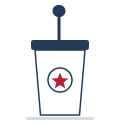

A fictional political strategy simulator
Build-A-Politician
Design your own fictional candidate, then send them to an AI polling analyst who reports back with approval ratings, poll numbers, and a full voter breakdown.

The Campaign Trail
Everything a Campaign Needs
From the first slogan to the final electoral count, every stage of the race is simulated.
Build a Candidate
Name, age, party, old job, home state, top issue, slogan, and the story of who they are — in a character creator, not a form.
Pick a Rival
Face a custom opponent or one of 25 fictional politicians — or skip it and let the analyst invent one.
Run the AI Simulation
An AI polling analyst reads the whole profile and reports approval, head-to-head polling, and the campaign events that moved it.
Full Voter Breakdown
Support by age, political lean, and location — plus honest strengths and weaknesses, with reasons for every number.
Step by step
From Announcement to Election Night
- 01Build your candidate. Eight choices, including a short description of who they actually are.
- 02Choose an opponent. Optional — skip it and the AI invents a credible rival.
- 03Run the simulation. An AI polling analyst reads the profile and reports back.
- 04Change one thing, run it again. Watch which numbers move and figure out why.
Ready when you are
Your Campaign Starts Now
No sign-up and nothing to install. Your candidate is saved in your own browser, and only the profile you write is ever sent anywhere.
Build Your Politician